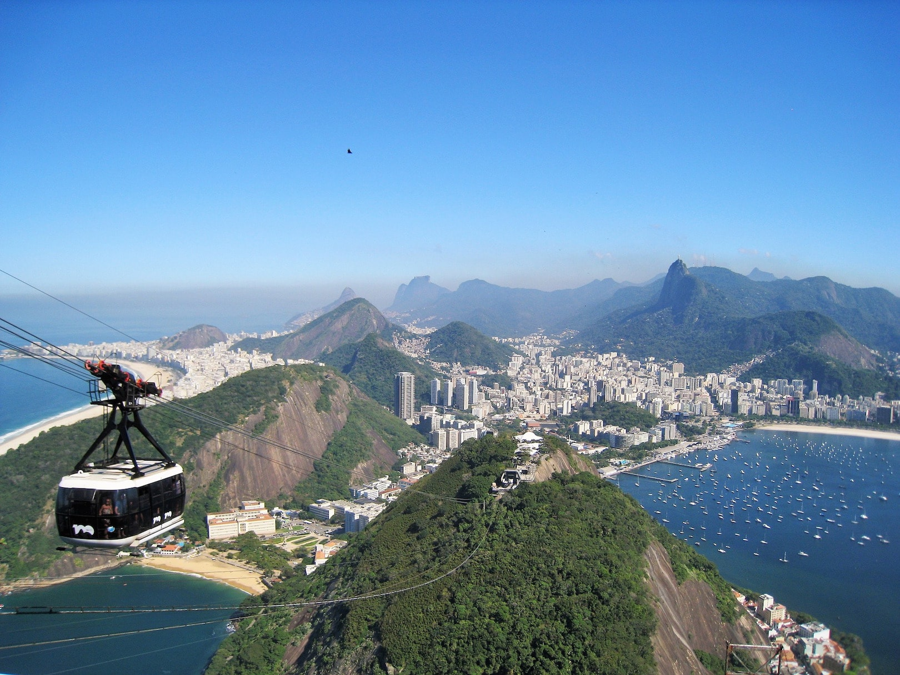

Rio de Janeiro
O que fazer no Rio de Janeiro: 38 lugares para visitar e dicas para a sua primeira viagem!
Os pontos turísticos do Rio de Janeiro estão entre os lugares que todo mundo deveria visitar ao menos uma vez na vida. Se você está montando um roteiro para a sua viagem à Cidade Maravilhosa, pode ser interessante conferir as dicas que separamos a seguir, com informações sobre clima, praias, passeios, transporte, e muito mais. Não deixe de conferir também o nosso guia do Rio de Janeiro, Com tudo para você planejar uma super viagem à capital carioca!
O que fazer no Rio de Janeiro: passeios
É super possível visitar os principais pontos turísticos do Rio de Janeiro por conta própria utilizando transporte público, caminhada, bicicleta ou carros por aplicativo, que não custam muito caro.
Ainda assim, caso voc√™ queira saber detalhes de cada local dá para contratar o servi√ßo com ag√™ncias que oferecem passeios guiados. Então nenhuma informa√ß√£o passará em branco. üòâ
No calçadão da praia de Copacabana, bastante frequentado por turistas, há diversos quiosques além de vendedores abordando pessoas e oferecendo os serviços. Tente negociar algum desconto! É possível encontrar, também, passeios bate-volta para cidades próximas ao Rio, como Arraial do Cabo, que é considerada uma das melhores praias do Brasil, na região dos Lagos.
Folha Rio de Janeiro1. Praias do Rio de Janeiro
As melhores praias do Rio de Janeiro atraem visitantes do mundo inteiro. A imensidão do mar carioca é o grande cartão de visita e entra no roteiro de viagem de todos os turistas. O clima quente da região sem dúvida pede um mergulho ao mar. Na Zona Sul ficam as praias mais procuradas pelos turistas que visitam o Rio de Janeiro: Leblon, Ipanema e Copacabana. São praias que podem ser interessantes para diferentes atividades, esde um mergulho no mar até mesmo para caminhar ou pedalar pela orla aproveitando o som das ondas.
Ipanema, bairro vizinho de Copacabana, está localizado na Zona Sul do Rio de Janeiro. O bairro nobre possui uma das praias mais bonitas da cidade, bastante frequentada por jovens. Ao visitar o lugar, não deixe de observar a vista para o Morro Dois Irmãos, andar no calçadão tomando uma água de coco e ainda admirar o pôr do sol da Pedra do Arpoador. Alugar uma bicicleta nas redondezas também é uma ideia de passeio.

E é na Zona Oeste que estão as praias mais apropriadas para o surf. Por serem menos conhecidas, podem ter menos concorrência do que as praias da Zona Sul, geralmente mais requisitadas. A Barra da Tijuca é uma opção muito interessante, que conta inclusive com estrutura e vários quiosques. Em sua extensão, a praia da Barra se torna Praia da Reserva, com pouquíssimo movimento. A praia do Recreio, também extensa, é outra boa opção para curtir um dia de sol na região.
Pontos turísticos do Rio de Janeiro
Listamos mais sugestões para te ajudar a escolher o que fazer no Rio de Janeiro, com atrações e passeios imperdíveis para a sua viagem. Confira a seguir!
2. Cristo Redentor
Literalmente de braços abertos, o Cristo Redentor, no morro do Corcovado, recebe diariamente milhares de turistas de diversos lugares do mundo. É necessário subir 700 metros do nível do mar para, enfim, chegar ao pico onde está a estátua que é cartão postal da cidade. O Cristo Redentor fica dentro do Parque Nacional da Tijuca e existem duas maneiras de chegar: nas vans autorizadas do Paineiras, que saem de diversos pontos do Rio, e no trem do Corcovado.

3. Pão de açúcar
O Bondinho do Pão de Açúcar está entre os principais pontos turísticos do Rio de Janeiro e foi inaugurado em 1912,
sendo o primeiro teleférico do Brasil e o terceiro no mundo. Ele liga o Morro da Urca ao
Morro do Pão de Açúcar – e mais de 40 milhões de pessoas já andaram nos bondinhos.
Lá do alto é possível encontrar uma deslumbrante paisagem da cidade, incluindo a enseada de Botafogo,
a orla de Copacabana e a entrada da Baía de Guanabara. Vale a pena colocar um dos cartões postais da cidade no seu
roteiro.
Quanto: Gratuito.
Onde: Rio de Janairo.
Quando: Sempre.
3. Pão de açúcar

A Escadaria Selarón fica no Rio de Janeiro, entre os bairros de Santa Teresa e Lapa.
É uma obra arquitetônica decorada pelo artista chileno Jorge Selarón, que a declarou uma
homenagem ao povo brasileiro.